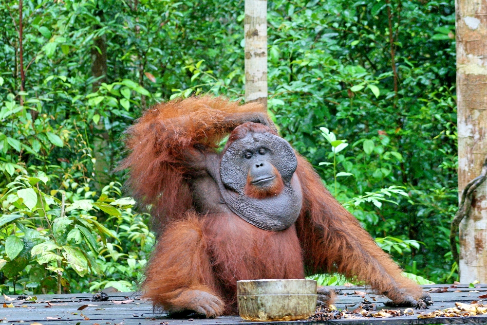

Robert Zubrin
@robert_zubrin July 31
16px from the left border and 12px below the title and handle's border there's a circular "avatar" image that represents the user who posted the content originally. The image has a diameter of 48px.

Complete the tuiter exercises described in section 4
Implement the explore screen as described in section 4.1 (25pts) Implement the explore screen as described in section 4.2 (25pts)